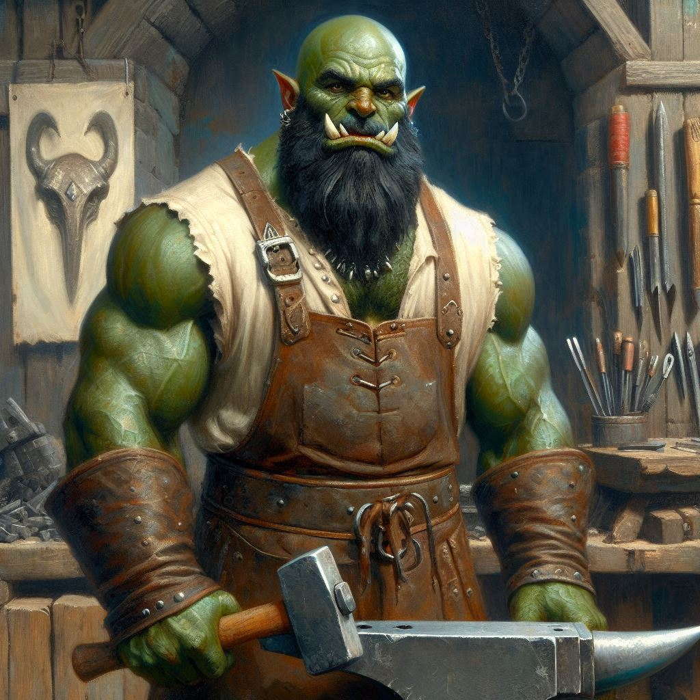
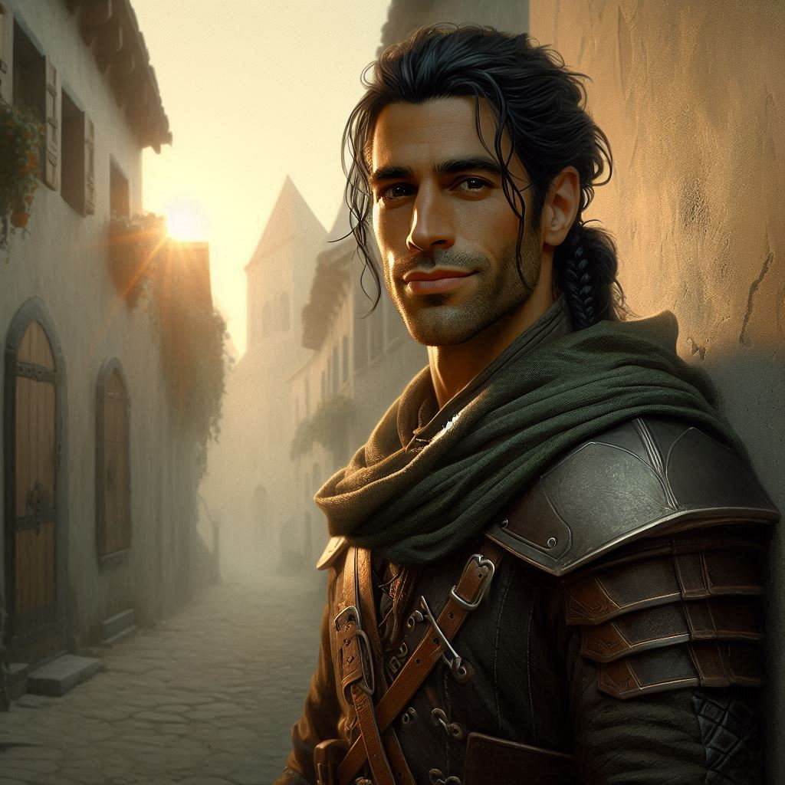

Baider the Blacksmith
You wake before dawn, the cool morning air filling your lungs with a mix of excitement and dread. The sun has not yet risen, and the world is cloaked in shadows, the perfect reflection of the doubts swirling in your mind. You know you should be preparing for your journey, but instead, you lie in bed, staring at the ceiling, the weight of your mission pressing down on you.
What if you fail? The thought gnaws at you like a hungry wolf. You’ve trained for years, but Jorsh the Betrayer isn’t just any target. He’s a sorcerer—and worse… you and Jorsh were once… close. He was the first love of your teen years. Rage bubbles up inside you. He left me, you remind yourself. And now it is my sworn duty to bring him to justice.
You know this is a serious conflict of interests. The right thing to do would be to recuse yourself of this mission and let someone with less emotional ties go after this bounty. But surely, you tell yourself, the magistrate knows of our history with Jorsh. He wanted you on this mission because of your involvement with Jorsh. You have unique knowledge about Jorsh’s habits and idiosyncrasies. You are uniquely situated to find and apprehend him before anyone else would be able to.
With a heavy sigh, you throw off the blanket and swing your legs over the side of the bed. The floorboards creak beneath your feet as you stand, and you hesitate, staring out the small window of your cramped room. The village of Belladonna is still asleep, but you can hear the distant sounds of the blacksmith's forge waking up. You know you need to talk to Baider—your adoptive father figure, the man who raised you after your own parents abandoned you. He’s always been a source of strength, but today, you fear he might also be the source of your fears.
You pull on your clothes, fastening your belt with the small dagger sheathed at your side. The cold metal feels reassuring against your skin as you step outside. The early morning sun is just beginning to peek over the horizon, casting a soft golden light over the village. The air is fresh, filled with the scent of dew on grass and the faint smoke from the forge.
As you approach the blacksmith’s shop, you feel a mix of nostalgia and trepidation. Memories flood your mind—the sound of hammer against anvil, the warmth of the forge on cold nights, and the man who taught you everything you know about survival. But alongside those memories are shadows of his harsh words, the weight of his expectations.
You push open the door, the familiar sound of the creaking hinges echoing in the stillness. The blacksmith is already at work, muscles rippling under his shirt as he hammers a glowing piece of metal. The heat from the forge washes over you, a stark contrast to the chill of the morning air.
“Kira,” he grunts without looking up. His green skin glows with an orange tinge in the light of the forge. “You’re up early. What do you want?”
You swallow hard, stepping forward into the light of the forge. “Baider, I came to talk to you about… my new mission.”
At the mention of your task, the half-orc straightens, finally turning to face you. His expression is unreadable, but you can feel the scrutiny in his eyes. “What criminal scum bag are you going to risk your life going after this time?”
“Someone I have history with,” you say evasively.
“You’re going after Jorsh the Betrayer,” he says flatly, crossing his arms over his broad chest. “Are you sure that’s wise?”
The question strikes a nerve, and you feel your confidence falter. “I can do it. I have to do it,” you insist, your voice more forceful than you feel. “This is my chance to prove myself.”
Baider scoffs, shaking his head. “Prove yourself? Or prove to everyone else that you’re not just another lost orphan? Kira, you need to understand something. This isn’t a game. Jorsh is dangerous, and given your… emotional baggage… you’re not ready for this kind of challenge.”
His words cut deeper than you expected, igniting the old fears you thought you had buried. What if he’s right? What if I’m just fooling myself?
“Do you think I’m afraid?” you snap, frustration boiling over. “I’ve faced danger before. I can handle it!”
The blacksmith narrows his eyes, studying you intently. “It’s not about fear, child. It’s about knowing your limits. You don’t have to prove anything to anyone. Just be honest with yourself.”
You feel your heart sink. The last thing you wanted was to be reminded of the abandoned child you once were. You’ve fought hard to escape that label, but the truth is a heavy burden. You can’t stay here, not with his harsh words echoing in your mind.
You turn on your heel, leaving the warmth of the forge behind. As you step outside, the cool breeze kisses your cheeks, but it does little to cool the burning embarrassment inside you.
“Hey!”
You glance back and see Elias running toward you, his expression a mix of concern and determination. He catches up, his breath coming in quick bursts. “I wondered if I would find you here. How did it go?”
You force a smile, but it doesn’t reach your eyes. “It went fine. Just… had some things to think about.”
Elias studies you, concern etching his features. “You don’t look fine. I don’t suppose you decided you want a partner for this mission?”
“No,” you say quickly, shaking your head. “I’m going alone. I need to do this myself.”
His brow furrows, and he steps closer, lowering his voice. “Kira, you don’t have to prove anything to me. I want to help. You know that.”
“I know,” you reply, but the words feel empty. “But this is something I need to face alone. I have to show everyone that I’m capable.”
“But what if you get into trouble?” he presses. “You know I can hold my own. Let me come with you. We can watch each other’s backs.”
You feel a twinge of guilt. Elias is brave, loyal, and more than capable, but you can’t shake the urge to stand on your own two feet. “I appreciate it, but I can’t. I have to prove I can do this without anyone’s help. It’s important to me.”
He opens his mouth to protest but stops, looking hurt. “If that’s how you feel…” His voice trails off, and you can sense the tension hanging in the air between you.
“Elias, I—” you start, but he shakes his head, stepping back.
“Just be careful, okay? I’ll be waiting for you to come back.”
As he turns to leave, you feel a mix of regret and resolve. You want to reach out, to tell him you appreciate his support, but the fear of being vulnerable tightens around your chest. Instead, you watch him go, feeling the weight of the decision settle in your gut.
With a heavy heart, you take a deep breath and face the rising sun, ready—or not—to confront the challenges ahead. The path to Hemlock Falls awaits, and you know you must walk it alone. But as the shadows lengthen behind you, doubt gnaws at the edges of your resolve, whispering that perhaps this time, being alone isn’t what you truly want.
You make your way back to your small cottage and don your favorite leather armor and faded green cloak. You have your wilderness pack, your bow, a quiver of arrows, and your sword. You’re ready to head out to Hemlock pass. But your mind wanders toward Elias. You hate to leave things unresolved between the two of you…